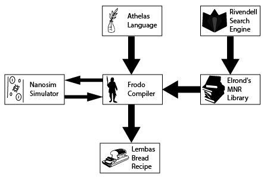

Join us in the journey of medical nanorobotics in the circulatory system. In this journey, we will review the research steps needed to develop multi robotics medical treatment protocol.
We will review the following steps:
Imagine yourself that a patient comes to the doctor's office (or doing an online meeting). The doctor (or AI platform) assesses the patient's condition and decides on a suitable treatment protocol.
In order to provide a medical nanorobotics (MNRs) based personalized treatment, the system requires as input, the patient's data and the requested medicine (as identified by the doctor). The system then generates a recipe for a printer to print personalized MNRs drug.
By a simple injection of the capsule's content to the bloodstream of the patient, the doctor can proceed to the next patient, knowing that the MNRs taking care of this patient.
There is active research on both AI platform to replace doctors and biological printers . These subjects are out of the scope of our work.
We are interested in the part from the moment the user (either human or AI doctor) is describing the needed treatment protocol and providing the patient's data and up to the moment where the computer produces the recipe for the MNRs capsule.
It is possible to divide this process into 4 main components.
The Tolkien Project is the name of this research and includes all the components described.
In the beginning, Inbal Wiesel-Kapah develops the Athelas programming language and the Bilbo compiler. Wiesel-Kapan et al. developed a rule-based programming language allowing the user to abstractly design the action of the population of different MNRs. The Bilbo compiler was able to provide a recipe of multiple types of MNRs with various payloads.
It is possible to add to Wiesel-Kapan et al.'s model several elements to advance the model for what we want to achieve.
To name a few:
The project is divided into six components.
The relationship between the different components of the Tolkien project can be presented as:
That said, this graph is not complete as it does not take into consideration the patient's data.
The Athelas Language developed by Wiesel-Kapan et al. is a rule-based programming paradigm. Each statement in Athelas is made of 4 clauses: Initialize, When, Actions, Until.
Athelas allows to design of which MNRs will operate (aka. expose a payload) according to some condition on abstract location in the body upon fulfillment of some biological condition.
The Bilbo compiler developed by Wiesel-Kapan et al. is getting as input an Athelas-written program and returns a list of MNRs with the right parameters (specifically, their payload).
The algorithm behind Bilbo shown to be
complete, sound, and halts
.
Bilbo is not able to tell the right amount of MNRs per MNR type with the specific parameters. In addition, the same MNR can be different in multiple parameters except for their payload.
Moreover, Bilbo is not able to make sure the actions, conditions, or location are biologically valid per the assigned MNR.
The Frodo compiler is the final goal of the Tolkien project. Frodo compiler should extend the Bilbo compiler to handle the automatic usage of a library of MNRs with a big range of chemical, biological and physical properties.
Besides, the Frodo compiler will take advantage of in-silico (simulated) performance of the suggested result to optimize it.
The outcome of Frodo is almost identical to the one from Bilbo; Frodo adds the amount of MNRs needed to perform the requested task.
Currently, Frodo Compiler is not yet developed as it depends on several other components first, which will be reviewed now...
MNRs are very different from each other. By reviewing 200 academic papers, using domain experts, we manually extract the following list of major properties:
core material, size, magnetic, shape, charge, membrane, cell-penetration, surface area, toxicity, payload, treatment or \ and analysis, used for in-vivo or \ and in-vitro.
Elrond's library is a system that takes academic papers in English in PDF file format and extracting instances of MNRs with there properties and values. After extracting the information, the system organizes it in a rational database, while merging properties of the same MNR types and alerting conflicts in values for the same property.
Currently, a DB with 100 records and 5 properties has been extracted with a good accuracy. Multiple open source projects have been published from this research.
Finding the articles needed for Elrond's library was a challenging task by itself. Existing search engines were not good enough for the task.
Rivendell is an academic meta-search engine working on Pubmed and arXiv. Rivendell uses a new searching approach called "project-based search" designed by academics for academics.
Rivendell handles parallel search for different projects by asking the user to explicitly divide what she searches into groups (called projects ). By explicitly marking search results as relevant and irrelevant, Rivendell learns the user's preferences and personalizes the results over time for each project.
In addition, Rivendell has a "backdoor" for MNR related searches - taking advantage of relevant marked search results from searches contains a list of entity words related to MNRs. In this way, Rivendell is gathering papers for Elrond's Library.
A mathematical model treating the in-vivo circulatory system as a flow graph and MNRs as final state machines (FSM) implemented as a stochastic graph-based simulator.
The Nanosim simulator is able to answer both prediction questions (aka. Forward queries) given the initial state of the system and the "what should happen to get" questions (aka. Backward queries).
Nanosim has been tested relative to in-vivo lab results, and found to provide very good initial results.
Further research is conducted while you are reading these lines... This presentation is regularly updated with new results and the extension of the presented results with more details.
If you find this research interesting and wish to know more or even participant - please feel free to contact us.